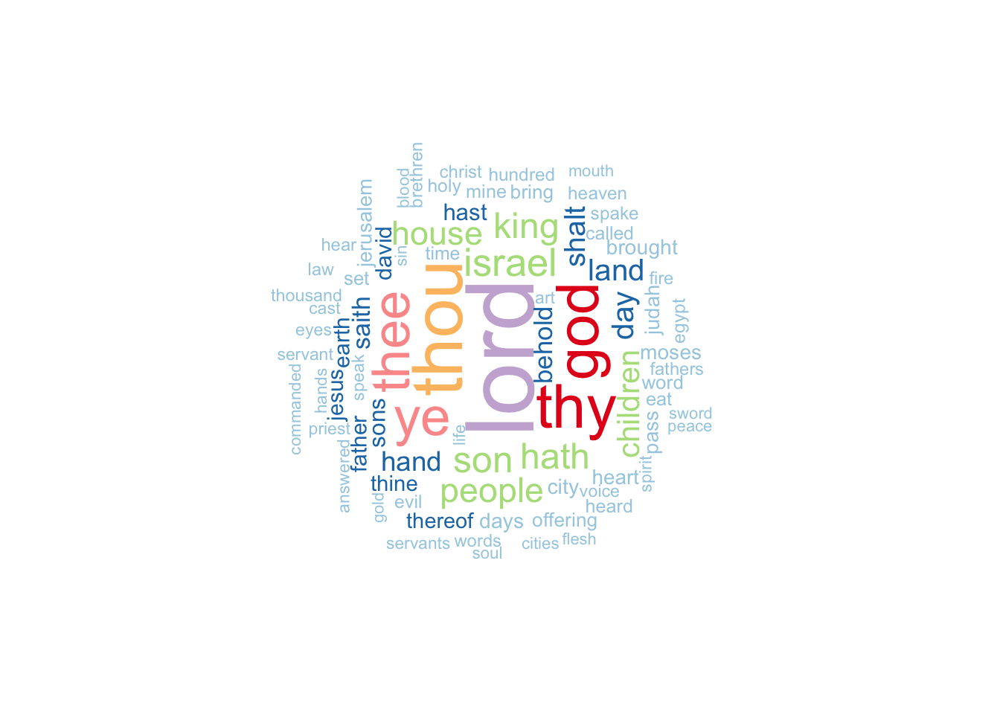

| Holy Books | Symbol Count | Total | Proportion |
|---|---|---|---|
| King James Version Bible | 0 | 31103 | 0.0000000 |
| The Holy Quran | 3291 | 6236 | 0.5277421 |
Textual Analysis: The Quran and the Bible
Introduction
How does the form and style of different holy books differ?
This page seeks to answer this question through an analysis of the textual similarities and differences between the Quran and the KJV Bible. While one can engage–and certainly many have—in comparative literary analyses between these two texts, tracking key style patterns through textual quantifications and visualization opens up possibilities for new and different insights.
The Holy Quran is the central holy text of Islam, while the Bible is the central holy text Christianity. The Quran was originally written in Arabic and the Bible in Hebrew (Old Testament) and Greek (New Testament). A small portion of the Old Testament was written in Biblical Aramaic. As such, it is worth noting that any textual analysis of these texts is a textual analysis of translations, wherein notes on form and style are notes on both the heart of the text and the given translation.
The Quran and the Bible have a lot in common, including shared stories and moral teachings, and assertion of a monotheistic god. They also have some clear differences: the Quran is much shorter at 6,236 ayahs (verses) while the King James Version of the Bible has 31,102 verses; the Quran is believed to have been revealed and recorded within a short frame of time, while the writing of the Bible occurred across centuries by many different authors;and the Quran is more lyrical and repetitious, while the Bible places more emphasis on storytelling. These differences represent but a sample of the ways in which these two texts can and have been contrasted. In my text analysis, I seek to identify other ways of comparing these two holy books, first with an an ayah/verse-level analysis and through word-level analysis.
Data sources: The Quran Dataset on Kaggle and Bible Corpus on Kaggle
Special Symbols
In the text of the Quran, these symbols appear semi-regularly: ˹ ˺. They do not appear in the KJV Bible.
In fact, over half of the ayahs in the Quran include this symbol. We can take a closer look at what kinds of phrases are bracketed in by these symbols:
| Surah Number | Ayah Number | Ayah Text | Symbol Text |
|---|---|---|---|
| 1 | 5 | You ˹alone˺ we worship and You ˹alone˺ we ask for help. | ˹alone˺ |
| 2 | 4 | and who believe in what has been revealed to you ˹O Prophet˺ and what was revealed before you, and have sure faith in the Hereafter. | ˹O Prophet˺ |
| 2 | 5 | It is they who are ˹truly˺ guided by their Lord, and it is they who will be successful. | ˹truly˺ |
| 2 | 8 | And there are some who say, “We believe in Allah and the Last Day,” yet they are not ˹true˺ believers. | ˹true˺ |
| 2 | 10 | There is sickness in their hearts, and Allah ˹only˺ lets their sickness increase. They will suffer a painful punishment for their lies. | ˹only˺ |
| 2 | 16 | They are the ones who trade guidance for misguidance. But this trade is profitless, and they are not ˹rightly˺ guided. | ˹rightly˺ |
| 2 | 18 | They are ˹wilfully˺ deaf, dumb, and blind, so they will never return ˹to the Right Path˺. | ˹wilfully˺ |
| 2 | 19 | Or ˹those caught in˺ a rainstorm from the sky with darkness, thunder, and lightning. They press their fingers into their ears at the sound of every thunder-clap for fear of death. And Allah encompasses the disbelievers ˹by His might˺. | ˹those caught in˺ |
| 2 | 21 | O humanity! Worship your Lord, Who created you and those before you, so that you may become mindful ˹of Him˺. | ˹of Him˺ |
| 2 | 22 | ˹He is the One˺ Who has made the earth a place of settlement for you and the sky a canopy; and sends down rain from the sky, causing fruits to grow as a provision for you. So do not knowingly set up equals to Allah ˹in worship˺. | ˹He is the One˺ |
It is unclear to me exactly what this symbol is intended to indicate as these symbols do not appear in the original Arabic of the Quran or in typical English translations. Generally, they seem to perhaps correlate with instances in which those words contained in the brackets might be emphasized.
Given that this symbol does not appear in most translations of the Quran, it is not necessarily a crucial point of analysis in comparing and contrasting the Quran with the KJV Bible. It does, however, raise an important point about symbols. In the original writings of the Quran and in many translations, the text contains symbols which give instructions to the reader. This is a major difference between the Quran and the Bible, as the Bible does not contain these types of symbols.
Dialogue
How often does dialogue appear in these two Holy Books? We can first asses this through counts and proportions of instances in which quotation marks (” “) appear.
| Title | Quotation Count | Total | Proportion |
|---|---|---|---|
| King James Version Bible | 0 | 31103 | 0.0000000 |
| The Holy Quran | 1159 | 6236 | 0.1858563 |
Interestingly, the KJV Bible does not use any quotation marks, while nearly a fifth of the verses in the Quran contain quotations.
It is worth noting that many modern translations of the Bible do include quotation marks. The original text of the Bible did not use quotations nor did the original Arabic of the Quran.
In modern, English translations, however, it is fairly common to include quotation marks as means to indicate speech and dialogue.
In order to include instances of potential dialogue in the KJV Bible, we will also add in our count instances in which the words “said,” “says,” “tells,” “told,” “asks,” or “asked” are used. Certainly there are other words which indicate dialogue and likely there are instances in which these words are connect to phrases which aren’t dialogue, however, using these words in addition to quotation marks gives us a rough estimate of the use of dialogic phrases.
| Title | Dialogue Count | Total | Proportion |
|---|---|---|---|
| King James Version Bible | 3903 | 31103 | 0.1254863 |
| The Holy Quran | 1276 | 6236 | 0.2046183 |
Once words associated with dialogue are included in the count, we can see that about an 8th of the verses in the Bible contain dialogic phrases while a little over a 5th of the ayahs in the Quran contain do. Evidently, dialogue and direct conversation plays a larger role in the Quran than in the Bible.
The Divine
How do the two books compare when it comes to references to the Divine? In the Quran, the Divine is most often referred to as “Allah,” which is Arabic for “God.” In this translation of the Quran, Allah/God is also referred to as “Lord,” “God,” and “Almighty.” In the KJV Bible, the Divine is referred to as “God,” “LORD,” “Lord,” and “Almighty.” Because God is triune in the Bible (God, Jesus, and Holy Spirit), “Christ,” “Jesus,” and the “Holy Spirit” can also be considered references to the Divine in the KJV Bible. The Christ/Jesus figure appears in The Quran as a prophet, but the Quranic Christ/Jesus is not Divine.
| Title | Divine Count without Jesus/Christ/Holy Spirit | Total | Proportion |
|---|---|---|---|
| King James Version Bible | 8858 | 31103 | 0.2847957 |
| The Holy Quran | 2681 | 6236 | 0.4299230 |
| Title | Divine Count including Jesus/Christ/Holy Spirit | Total | Proportion |
|---|---|---|---|
| King James Version Bible | 9681 | 31103 | 0.3112561 |
| The Holy Quran | 2694 | 6236 | 0.4320077 |
The Divine is referred to in approximately 43% of ayahs in the Quran and about 31% of the verses in the KJV Bible once the triune God is taken into account. These percentages aren’t drastically different, but nevertheless, it is clear that the Quran includes more verses with direct reference to God.
Most common words
Wordclouds of the most common words in the Quran and in the Bible indicate how prominant the Divine figure is within the text.

Positive vs. Negative Sentiment Analysis
A visual trajectory of the sentiment as depicted through the use of words positively and negatively associated demonstrates that while the sentiment is up and down in both texts, the KJV Bible has very drastic ups and downs in the beginning parts (the Old Testement) and mellows out as it goes. The Quran too has its highest postivites and lowest negatives at the beginning, but these are much less drastic. As the Quran progresses, the text is largely neutral.